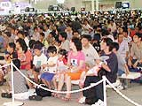
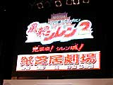
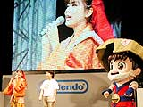
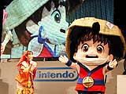
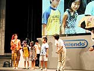
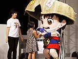

|  午前11時45分、イベントコーナーでは、9月27日にチュンソフトから発売予定のNINTENDO64用ソフト、『風来のシレン２ 鬼襲来！ シレン城！』を題材に、いろんな楽しい催し物が行われました。その模様をご紹介しましょう。 |
●風来のシレン２ 紙芝居劇場
MCのおねえさんと、人気者シレンが登場し、『風来のシレン２ 鬼襲来！ シレン城！』のストーリーを、紙芝居風に紹介してくれました。
シレンがたどり着いたナタデ村が、鬼に襲われる。この村を救うべく、「お城を作って村を鬼から守ろう」とシレンが立ち上がり、お城作りの材料あつめが始まります。しかし、鬼たちもまたそんなシレンをつぶそうとたくらんでいます。アスカやヒマキチなどの新しい仲間とともに、シレンはナタデ村を救えるか!? |
|



|
●モンスタースピードアタック
ユーザー参加のゲーム大会も行われました。これは、壇上で『風来のシレン２ 鬼襲来！ シレン城！』をプレイしてもらい、90秒という短い時間の中で、モンスターを何匹倒せるかを競うというもの。16匹のモンスターをたおし、みごと優勝の栄冠を勝ち取ったのは、女の子プレイヤーの中西ミユちゃん(8歳)。男の子のプレイヤーがガツガツとパワープレイを見せる中、ミユちゃんはちゃんと最初に装備を確かめたり、モンスターとの間合いを計算に入れてわざと一度攻撃をからぶったりなど、落ち着いた余裕のプレイを見せてくれました。最初から自信はあったというミユちゃん。シレンから優勝商品のマムル人形を手渡され、とってもうれしそうでした。おめでとうミユちゃん。 |
●最新先取り情報
チュンソフトのスタッフの方が、『風来のシレン２ 鬼襲来！ シレン城！』の貴重な新情報をいくつか教えてくれました。 |
| その１・合成モンスター、マゼルン |
| ゲームに登場する、マゼルンというモンスターに、２つ以上のアイテムを投げつけると、おなかの中で合成してくれるのです。もちろん、必ず成功するわけではありませんが、勇気を出して、いろんなアイテム合成にチャレンジしてみたいですね。 |
| その２・もののけ王国の存在 |
| 今作では、モンスターのつぼというアイテムが登場します。これをモンスターに投げつけると、モンスターを捕まえて、仲間として戦わせることができるのです。捕まえたモンスターは、もののけ王国という場所に捕獲しておけるんだって。いろんなモンスターを捕まえて、モンスター王国を作ってみては？ |
|